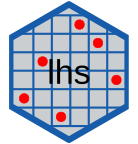

|  |
This package provides a number of methods for creating and augmenting Latin Hypercube Samples and Orthogonal Array Latin Hypercube Samples.
| Actions | Linux & MacOS | Windows | Code Coverage | CRAN Downloads | CRAN |
|---|---|---|---|---|---|
 |
Visit the webpage here
See the Doxygen documentation here
The reverse dependency checks for lhs can be found here.
Installation
You can install the released version of lhs from CRAN with:
install.packages("lhs")You can also install the development version of lhs from here with:
# install.packages("devtools")
devtools::install_github("bertcarnell/lhs")Examples
Create a random LHS with 10 samples and 3 variables:
Create a design that is more optimal than the random case:
A <- geneticLHS(10, 3, pop = 100, gen = 5, pMut = 0.1)
B <- maximinLHS(10, 3, method = "build", dup = 5)
D <- maximinLHS(10, 3, method = "iterative", optimize.on = "result", eps = 0.01, maxIter = 300)
E <- improvedLHS(10, 3, dup = 5)
G <- optimumLHS(10, 3, maxSweeps = 10, eps = 0.01)
data.frame(method = c("random","genetic","maximin","maximin","improved","optimum"),
mean_dist = c(mean(dist(X)), mean(dist(A)), mean(dist(B)),
mean(dist(D)), mean(dist(E)), mean(dist(G))),
min_dist = c(min(dist(X)), min(dist(A)), min(dist(B)),
min(dist(D)), min(dist(E)), min(dist(G))))| Method | Mean Distance | Minimum Distance |
|---|---|---|
| random | 0.7067224 | 0.2708864 |
| genetic | 0.7189860 | 0.4058587 |
| maximin | 0.7295788 | 0.3611274 |
| maximin | 0.7245922 | 0.3974934 |
| improved | 0.7028446 | 0.3871904 |
| optimum | 0.7289469 | 0.4597657 |
Augment an existing design:
Y <- randomLHS(10, 5)
Z <- augmentLHS(Y, 2)Build an orthogonal array LHS:
# a 9 row design is returned because a 10 row design is not possible with these algorithms
W9 <- create_oalhs(10, 3, bChooseLargerDesign = FALSE, bverbose = FALSE)
# a 16 row design is returned because a 10 row design is not possible with these algorithms
W16 <- create_oalhs(10, 3, bChooseLargerDesign = TRUE, bverbose = FALSE)Help
R-Help Examples of using the LHS package
- Latin hyper cube sampling from expand.grid()
- Latin Hypercube Sampling with a condition
- Latin Hypercube with condition sum = 1
- Latin hypercube sampling
- Latin Hypercube Sample and transformation to uniformly distributed integers or classes
- Latin hypercube sampling from a non-uniform distribution
- Latin Hypercube Sampling when parameters are defined according to specific probability distributions
StackExchange Examples:
- Latin Hypercube around set points
- Latin hypercube sampling with categorical variables
- Are Latin hypercube samples uncorrelated
- Stopping rule for Latin hypercube sampling (LHS)
- Is a group of random hypercube samples equivalent to a single latin hypercube with more samples?
- Taking samples of data using Latin Hypercube Sampling
- Number of parameter sets generated by latin hyercube sampling
- Is there a way to check if sample obeys the Latin Hypercube Sampling rule?
- Effectiveness of Latin Hypercube Sampling
- Dividing CDF rather than PDF equally in Latin Hypercube Sampling
- Stratified sampling / QMC simulation for compound Poisson rv
- Using Latin Hypercube Sampling with a condition that the sum of two variables should be less than one
- How to generate a design for a response surface with a discrete input random variable?
- Is it necessary to shuffle X coordinates in Latin hypercube Sampling?
Other
lhs package announcement: R-pkgs New R-Packages: Triangle and LHS